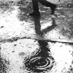

Gregg Braden dice e scrive nelle sue ricerche, che la realtà non è esterna e scollegata da noi bensì che siamo noi a creare la realtà che ci circonda, con la nostra volontà, conscia o inconscia che sia. Penso che ciò che dice Gregg Braden sia completamente falso! E’ un pò come dire che quando lavoro dovendo fare i turni di notte standomene otto ore in ufficio, e fà freddo perchè è inverno, e di giorno piove ed è buio, bhè… finisce che non esco nemmeno di casa, perchè la cosa, capite, mi deprime moltissimo. Quindi non è vero che è la realtà esterna che si è trasformata a causa dei miei pensieri negativi, è che io mi sono trasformato davvero in una piastrella della mia cucina.Pioveultima modifica: 2008-11-05T16:44:00+01:00da
Reposta per primo quest’articolo